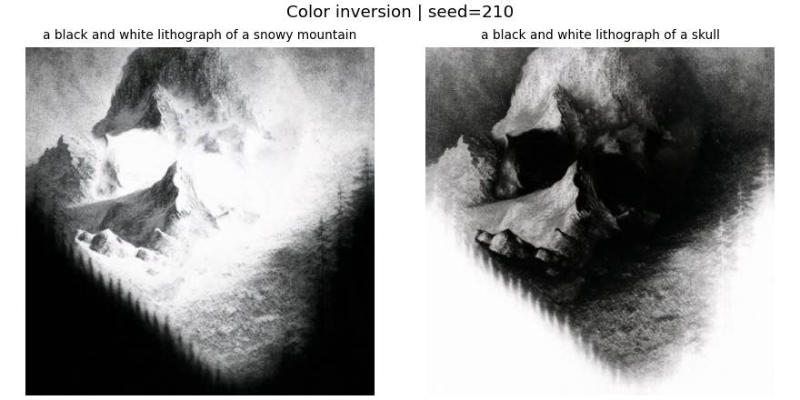
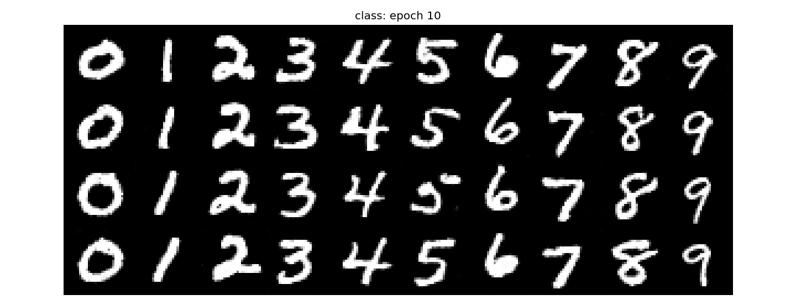

Fun with Flow Models
CS280A Project 3
Benny ChenYu Wan
This project explores image generation with flow models: first using a pretrained model, then training a model from scratch on MNIST.
Part A: Exploring the Power of Flow Models
Denoising, Euler sampling, classifier-free guidance, image editing, visual anagrams, hybrid images, and a course-logo experiment using PixNerd.

Part B: Flow Matching from Scratch
Training UNets on MNIST: single-step denoising, time-conditioned flow matching, class-conditioned generation, and extended training.
